Was shoebox besonders macht
Fünf Dinge, die shoebox von anderen Foto-Verwaltungen unterscheiden.
-
Deine Fotos bleiben deine
shoebox hat keinen Import und keine eigene Bibliothek, in die deine Fotos eingesperrt werden. Deine Ordner bleiben genau so, wie du sie angelegt hast. Es liest deine Dateien und schreibt nichts hinein: Tags, Daten und Orte stehen in seinem eigenen Index. Vor und nach jedem Lesen prüft ein Wächter Größe, Daten und einen vollen Hash und bricht bei jeder Abweichung ab. Eine Datei ändert sich nur, wenn du sie verschiebst, umbenennst oder in den Papierkorb legst oder ein JPEG drehst (zwei Bytes).
-
Liegt auf deinem Laufwerk und bleibt klein
Alles, was shoebox über deine Fotos speichert, liegt in einem versteckten Ordner
.shoeboxneben deinen Fotos: die Bibliotheklibrary.db, die Vorschauenthumbs.dbund der Papierkorb. Das Laufwerk an einen anderen Computer stecken, und alles ist dabei. shoebox fügt nur hinzu, was eine Foto-App zum Laufen braucht: unter 1 GB bei 80 GB Fotos (etwa 1 %), gemessen an einer echten Bibliothek mit 31 GB, einschließlich der Daten der Gesichtserkennung. -
Duplikate über Laufwerke hinweg
Findet identische, verkleinerte, bearbeitete und ähnliche Fotos, auch über mehrere Laufwerke, und prüft ein Backup gegen das Original. Die beste Kopie bleibt immer, den Rest entscheidest du.
-
Gemacht für den Datei-Manager
Du ordnest im Finder oder Explorer, und ein schneller Scan übernimmt die Änderungen. Ordner zählen als Tags, und wenn du Fotos in shoebox verschiebst, wandern RAW-, Live-Photo- und Sidecar-Dateien mit.
-
Lokale Erkennung, optionale Karten
Gesichter, Katzen und Hunde werden auf deinem eigenen Computer erkannt, und Karten sind aus, bis du sie einschaltest. Keine Cloud, kein Konto.
Was shoebox kann
Eine Seite im Browser, eine Zeitleiste von allem auf dem Laufwerk.
-
Einlesen
Mit Scannen liest shoebox deine Fotos in seine Datenbank ein und sammelt die Metadaten, die eine Foto-App braucht, etwa Datum, Größe und Orte. Außerdem findet es Duplikate auf dem Laufwerk und vergleicht Backups und andere Laufwerke mit diesem Index.
-
Duplikate
Findet identische, verkleinerte, bearbeitete und ähnliche Fotos. Du prüfst; die beste Kopie bleibt immer.
-
Mehrere Laufwerke
Die Fotos mehrerer Laufwerke in einer gemeinsamen Zeitleiste durchstöbern, auch wenn sie auf verschiedenen Platten liegen. Backups werden erkannt und geprüft.
-
Sicherer Papierkorb
Gelöschte Fotos landen in einem Papierkorb auf dem Laufwerk. Zurücklegen oder endgültig löschen.
-
Verschieben & ordnen
Fotos in einen Ordner verschieben (wird bei Bedarf angelegt). RAW-, Live-Photo- und Sidecar-Dateien wandern mit.
-
Tags
Eigene Tags für viele Fotos auf einmal. Auch Ordner zählen als Tags. Im Index gespeichert, nie in den Fotos.
-
Zeitleiste
Alle Fotos und Videos nach Monat, mit Jahressprung, Ordnerbaum und einer Ansicht mit Infos zum Foto.
-
Suchen & Filtern
Tippe eine Person, ein Haustier, einen Tag oder Ordner. Kombiniere Schlagwörter für eine komplexere Suche. Filter nach Fotos, Videos, Live Photos oder Screenshots, oder zeige nur deine Favoriten ♥.
-
Personen & Haustiere
Optionale Erkennung gruppiert Gesichter, Katzen und Hunde. Du vergibst Namen, shoebox schlägt den Rest vor.
-
Orte
Optionale Karten, standardmäßig aus: eine Karte in den Infos von Fotos mit GPS-Daten, eine Weltkarte aller deiner Fotos und benannte Orte wie „Zuhause“, die ihre Fotos von selbst sammeln.
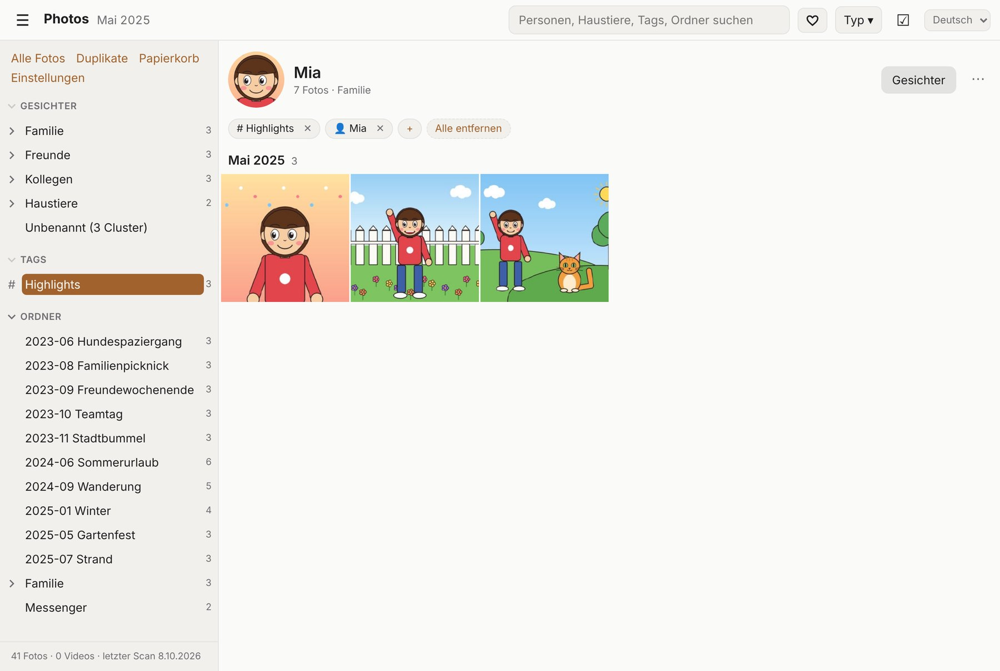
Die Oberfläche im Überblick
Alles ist auf einer Seite. So findest du dich zurecht.
-
Ordner-Menü
☰ blendet die Seitenleiste auf schmalen Bildschirmen ein oder aus.
-
Suchfeld
Personen, Haustiere, Tags und Ordner; mehrere wählen, um sie zu kombinieren.
-
Favoriten ♥
Nur die Fotos zeigen, die du mit einem Herz markiert hast. Auch zu finden, wenn du favorit ins Suchfeld tippst.
-
Typ
Hake an, was gezeigt werden soll; ohne Haken wird alles gezeigt. Fotos: Standbilder ohne Screenshots (fahre über das ⓘ). Videos: eigenständige Videos. Live Photos: Fotos mit einem kurzen Clip. Screenshots: Bilder von einem Handy- oder Computerbildschirm.
-
Jahr
Direkt zu einem Jahr springen.
-
Auswählen ☑
Fotos zum Verschieben, Taggen oder in den Papierkorb wählen.
-
Schnellzugriff
Alle Fotos · Duplikate · Papierkorb · Einstellungen.
-
Ordner
Deine Ordner mit Anzahl. Tags, Gesichter und Laufwerke erscheinen hier, sobald es sie gibt, und Orte, wenn Karten eingeschaltet sind.
-
Zeitleiste
Monate mit Anzahl. Ein Klick auf ein Foto öffnet die Ansicht.
-
Sprache
Zwischen Deutsch und Englisch wechseln.
-
Status
Scan-, Vorschau- und Laufwerksstatus unten in der Seitenleiste.
Ein typischer Ablauf
Laufwerk anstecken und Start shoebox doppelklicken. Scannen (geht schnell, wenn sich wenig geändert hat) und die Foto-App öffnen. Für die Fotos eines Ereignisses den Ordner im Finder aufs Laufwerk kopieren (benannt wie 2025-08 Urlaub) und erneut scannen: Waren einzelne Dateien schon auf dem Laufwerk, bietet die Zentrale an, die neuen Kopien zu löschen. Dann taggen und sortieren. Ab und zu die Duplikate ansehen und nach jedem Backup die Backup-Prüfung laufen lassen.
In drei Schritten loslegen
macOS, Intel (ab 10.13) und Apple Silicon. Zum Ansehen und Scannen ist nichts zu installieren; Gesichter- und Haustiererkennung sind Erweiterungen, die du in der Zentrale installierst.
-
Entpacken und festlegen, wo es liegt
shoebox-macos.tar.gz aus dem Release entpacken (im Finder doppelklicken). Du bekommst einen Ordner shoebox-macos (der Name sagt, für welches System er ist) mit dem Programm shoebox, Start shoebox.command, dem Ordner recognizer (dem Installer für die Erweiterungen) und diesem Handbuch im Ordner guide. Diese Dateien zusammenlassen; keine einzelnen Dateien herausziehen. Dann einen von zwei Wegen wählen:
Auf dem Laufwerk (am besten, wenn du das Laufwerk zu anderen Computern mitnimmst): den ganzen Ordner shoebox-macos in den obersten Ordner deines Foto-Laufwerks kopieren, neben deine Fotoordner, sodass es
/Volumes/MeinLaufwerk/shoebox-macos/gibt. Einen Ordner .shoebox nicht selbst anlegen: shoebox erstellt ihn beim ersten Scan auf dem Laufwerk. Erweiterungen, die du später installierst, liegen inshoebox-macos/recognizerauf dem Laufwerk und reisen mit. Andere Systeme bekommen einen eigenen Ordner daneben (zum Beispiel shoebox-windows, sobald veröffentlicht), jeweils mit eigenen Erweiterungen; gestartet wird aus dem Ordner des Systems, an dem du sitzt.Auf deinem Computer: den ganzen entpackten Ordner shoebox-macos an einen Ort verschieben, an dem er bleiben soll (zum Beispiel Dokumente, nicht Downloads), und seine Dateien zusammenlassen. Von dort öffnest du ihn für jedes Laufwerk, das du ansteckst; Erweiterungen werden einmal in seinen Ordner recognizer installiert und für alle Laufwerke genutzt. Der Bibliotheks-Index (ein versteckter Ordner .shoebox) liegt in beiden Fällen auf dem jeweiligen Laufwerk.
-
Zentrale öffnen
Start shoebox.command doppelklicken (auf dem Laufwerk oder im Ordner auf deinem Computer). Ein Terminal-Fenster öffnet sich (offen lassen) und die Zentrale erscheint im Browser. Fragt macOS nach, die Datei per Rechtsklick mit Öffnen starten.
-
Erweiterungen, scannen, dann öffnen
Nur wenn Personen und Haustiere erkannt werden sollen: in Schritt 1, Erweiterungen, ankreuzen, was du willst (Gesichter, Haustiere oder beides; jedes geht ohne das andere), und Ausgewählte Erweiterungen installieren drücken. Die Zentrale listet, was geladen wird: das Programm Python und OpenCV (etwa 200 MB, einmal für alle Erweiterungen), Gesichter (etwa 40 MB) und Haustiere (etwa 140 MB). Internet nötig, einige Minuten. Erweiterungen lassen sich später ergänzen; ein Computer anderer Art (Intel oder Apple Silicon) braucht sie einmal auf diesem Computer. Python und OpenCV wird immer mit der ersten Erweiterung installiert (sein Kästchen ist angekreuzt und lässt sich nicht abwählen). Solange eine Erweiterung fehlt, bleibt ihr Erkennen-Knopf grau und sagt warum. Ein Klick auf die Überschrift Erweiterungen klappt den Schritt zu; er bleibt zu, sobald alles installiert ist. Dann Laufwerk hinzufügen (anklicken oder
/Volumes/MeinLaufwerktippen), Scannen drücken, dann Foto-App starten. Der erste Scan liest jede Datei einmal und dauert bei großen Laufwerken eine Weile; später werden nur Änderungen angesehen. Nach dem Scan listen die Reiter Verschoben, Geändert, Fehlend und Schon auf dem Laufwerk (jeweils mit Anzahl) genau auf, um welche Dateien es geht; bei neuen Dateien, die du schon hattest, steht die ältere Kopie gleich daneben.
Aufgaben in der Zentrale
- Scannen
- neue, verschobene und geänderte Fotos finden. Schnell: es schaut nur auf das, was sich seit dem letzten Scan geändert hat, und die Reiter zeigen, was dieser Scan geändert hat. Nach dem Verschieben, Umbenennen oder Hinzufügen von Fotos ausführen. Es listet auch neue Kopien von Dateien, die das Laufwerk schon hatte.
- Prüfen
- prüfen, dass nichts verloren oder beschädigt ist. Es liest jede Datei neu und vergleicht sie mit dem, was der Index kennt; so findet es Dateien, die auf dem Laufwerk unbemerkt beschädigt wurden. Langsam, also hin und wieder ausführen (alle paar Monate oder bevor man sich auf ein Backup verlässt), nicht nach jedem Verschieben. Verschiebungen sind nicht seine Sache: ein verschobenes Foto hat im Index seinen neuen Platz und besteht die Prüfung. Ein Foto, dessen Pfad weg ist, dessen Inhalt aber anderswo auf dem Laufwerk noch liegt (eine gelöschte Kopie), steht als „umgezogen“ in der Liste, nicht als Fehler. Nur Inhalt, der nirgends mehr auf dem Laufwerk liegt, zählt als fehlend. Fehlen Dateien, erscheint nach der Prüfung (und nach einem Scan) ein Knopf, der ihre Einträge vergisst: sie werden aus dem shoebox-Index, seiner Datenbank auf dem Laufwerk, entfernt. Keine Fotodatei wird angefasst.
- Gesichter erkennen
- die Gesichter in deinen Fotos finden (mit „Haustiere erkennen“ auch Katzen und Hunde). Braucht die Erweiterung „Gesichter“.
- Gedrehte Gesichter
- auch Gesichter finden, die auf der Seite liegen, zum Beispiel liegende Personen (langsamer). Braucht die Erweiterung „Gesichter“.
- Haustiere erkennen
- Katzen und Hunde finden; sie erscheinen bei den Gesichtern. Braucht die Erweiterung „Haustiere“, nicht die für Gesichter.
- Gesichts-Statistik
- wie die Erkennung gelaufen ist
- Backup-Prüfung
- ist der 2. Ordner eine vollständige Kopie des 1.?
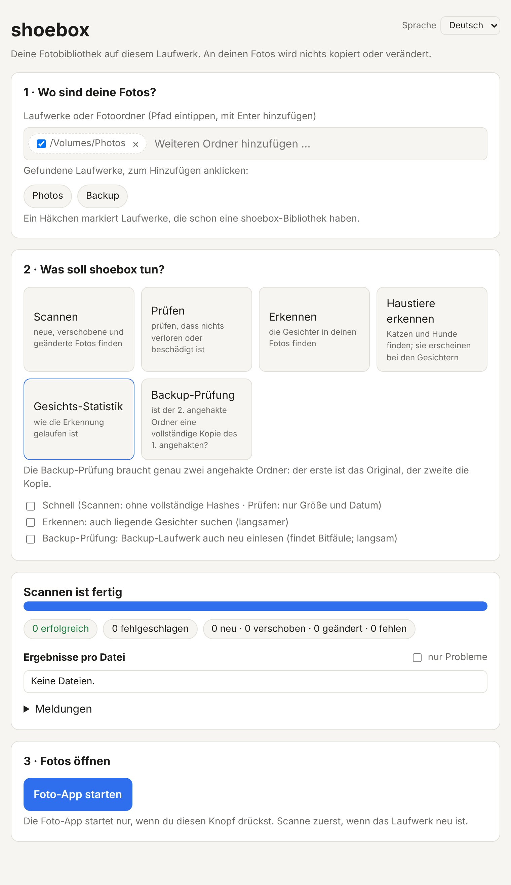
Mehrere Computer und Systeme
- Wo die Erweiterungen gesucht werden: zuerst im Ordner recognizer neben dem gestarteten shoebox-Programm, zuletzt im eigenen versteckten
.shoebox/recognizerdes Laufwerks (nur, wenn der Programmordner nichts hat). Ein shoebox-Ordner auf deinem Computer wird also für jedes Laufwerk benutzt, auch wenn ein Laufwerk selbst Modelle enthält. - Modelle und Python sind zweierlei. Die Modelle (Gesichter, Haustiere) sind auf jedem Computer gleich. Python und OpenCV gibt es je Computerart: Intel-Mac, Apple-Silicon-Mac, Linux, Windows. Nimmst du ein Laufwerk mit shoebox-macos von einem Intel-MacBook zu einem neueren mit, zeigt Schritt 1 dort bei Python und OpenCV nötig, deine Erweiterungen sagen Modelle da, braucht Python für diesen Computer, und die Erkennen-Knöpfe sind grau. Dort einmal Ausgewählte Erweiterungen installieren drücken: Es wird nur das fehlende Python geladen, die Modelle bleiben. Beide Arten liegen dann nebeneinander im selben Ordner recognizer, und jeder Computer nutzt seine eigene.
- Mac und Windows auf einem Laufwerk: beide Ordner in den obersten Ordner des Laufwerks kopieren:
shoebox-macosundshoebox-windows. Jeder hat seinen eigenen Ordner recognizer; Modelle, die du im einen installierst, gelten also nicht im anderen. Gestartet wird aus dem Ordner des Systems, an dem du sitzt. Beide nutzen denselben versteckten Index.shoeboxauf dem Laufwerk. Die Erweiterungen lassen sich auch unter Windows mit demselben Knopf installieren: Dafür braucht es Windows 10 oder 11 auf einem 64-Bit-Intel- oder AMD-Prozessor, sonst nichts, was vorher installiert sein müsste.
Gut zu wissen
- Für Video-Vorschauen braucht shoebox ffmpeg, ein kostenloses Werkzeug, das ein Bild aus einem Video holt. shoebox sucht es im selben Ordner wie das Programm shoebox (die Datei heißt
ffmpeg, unter Windowsffmpeg.exe) und dann imPATHdeines Computers, zum Beispiel nachbrew install ffmpeg. Oder lade einen statischen Build (eine einzelne Datei) von ffmpeg.org/download herunter und lege ihn neben das Programm; das ist optional und braucht meist 50–100 MB. Welche Datei du nimmst:- Mac: am einfachsten
brew install ffmpeg. Oder den Link macOS auf der Seite öffnen, einen statischen Build laden, entpacken und die Dateiffmpegneben shoebox legen. Verweigert macOS das Öffnen, einmal mit Rechtsklick Öffnen wählen. - Windows: den Link Windows auf der Seite öffnen und das Zip release essentials laden. Öffnen, in den Ordner
bingehen undffmpeg.exe(nur diese Datei) nebenshoebox.exekopieren. - Linux:
sudo apt install ffmpegoder das Gleiche in deiner Distribution.
- Mac: am einfachsten
- shoebox legt alles in einem versteckten Ordner
.shoeboxoben auf dem Laufwerk ab: die Bibliotheklibrary.db(Index, Tags, Namen, Entscheidungen) mit ihrer Sicherungskopielibrary.db.bak, die Vorschauenthumbs.db,recognition.db, wenn du die Erkennung nutzt und dentrash. Deshalb kann das Laufwerk an einen anderen Computer umziehen. Auf dem Mac ist der Ordner versteckt: Im Finder Cmd + Umschalt + . drücken, um ihn zu sehen. - Schließt du das Terminal-Fenster, beendet das shoebox.
Die App spricht Deutsch und Englisch: Die Sprache wählst du unten in der Seitenleiste.
Stöbern und ansehen
Durch die Zeitleiste scrollen, nach Jahr springen, ein Foto öffnen.
Zeitleiste
Fotos sind nach Aufnahmedatum gruppiert, neueste zuerst. Das Menü Jahr springt; der Monat neben dem Laufwerksnamen in der oberen Leiste zeigt, wo du bist. Auf einer anderen Seite (Duplikate, Papierkorb, Einstellungen, Gesichter, …) steht dort stattdessen der Name dieser Seite. Ein Foto ohne Aufnahmedatum nimmt den Monat aus dem Namen seines Ereignisordners (2020-07, 2020.07, 20-07 oder 20.07), sonst das frühere von Erstellungs- und Änderungsdatum der Datei; das Infofeld markiert das Datum dann als geschätzt.
Ordner
Die Seitenleiste spiegelt die Ordner deines Laufwerks. Ein Klick zeigt nur dessen Fotos. Einen Ordner kannst du über seinen Chip umbenennen oder verschieben.
Ansicht
Foto anklicken. ⓘ öffnet das Infofeld: Datum (als geschätzt markiert, wenn es nicht der Aufnahmetag ist), Kamera, Größe, Tags, Personen und Knöpfe, um den Ordner zu öffnen oder den Pfad zu kopieren. Ganz unten zeigen die GPS-Daten, wo das Foto aufgenommen wurde (siehe „Orte und Karten“).
Favoriten
Das ♥ in der oberen Leiste der Ansicht oder die Taste f markiert das Foto als Favorit. In der Zeitleiste sitzt dasselbe Herz oben rechts in jedem Foto (es erscheint, wenn du mit der Maus darüberfährst; Favoriten zeigen es immer). Noch einmal klicken nimmt es wieder weg. Intern ist ein Favorit einfach dein eigener Tag favorite, im Index gespeichert wie jeder Tag, nie im Foto.
Drehen
r dreht nach links, Umschalt+R nach rechts. Bei JPEGs ändern sich nur die zwei Bytes der Drehmarke; bei anderen Formaten gilt die Drehung nur in shoebox.
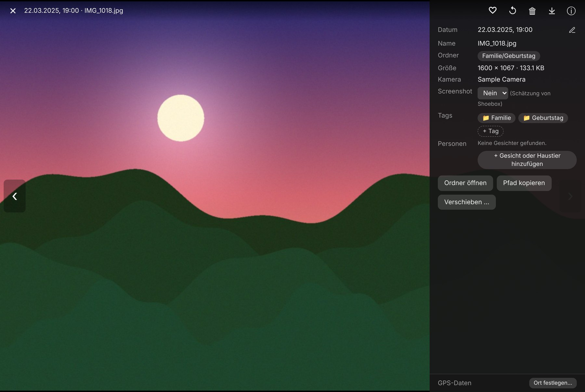
Tastatur in der Ansicht
- ← →
- vorheriges / nächstes
- i
- Infofeld ein- / ausblenden
- Leertaste
- Ansicht öffnen / schließen (bei einem per Pfeiltasten gewählten Foto)
- f
- zu Favoriten hinzufügen / entfernen
- r · Umschalt+R
- nach links / rechts drehen
- Esc
- Ansicht schließen
Finden und ordnen
Suchen, auswählen, taggen und verschieben: alles geht für viele Fotos auf einmal.
Suchen
Tippe ins Suchfeld: Vorschläge erscheinen für Tags, Personen und Ordner. Mehrere gewählte werden zu Chips, die das Ergebnis eingrenzen; × entfernt einen, Alle entfernen beginnt neu. Deine Favoriten findest du mit dem ♥-Knopf neben Typ, oder tippe favorit (deutsch) bzw. favorite (englisch) und wähle ♥ Favoriten; das lässt sich mit allem anderen kombinieren, z. B. Favoriten einer Person oder eines Jahres. Bei eingeschalteten Karten (siehe „Orte und Karten“) bieten die Vorschläge auch deine Orte an.
Typ bietet Fotos (Standbilder ohne Screenshots), Videos, Live Photos und Screenshots; hake beliebige an, ohne Haken wird alles gezeigt. Um Screenshots aus der Zeitleiste zu nehmen, hake Fotos, Videos und Live Photos an, aber nicht Screenshots; um nur Screenshots zu sehen, hake nur Screenshots an. Shoebox erkennt einen Screenshot an der Datei (ein PNG ohne Kameradaten, ein Name wie Screenshot oder Bildschirmfoto, die Größe eines Handy- oder Computerbildschirms) und am Bild selbst (große einfarbige Flächen). Es kann sich in beide Richtungen irren: Im Info-Fenster eines Fotos ist Screenshot ein Auswahlfeld, das mit der Schätzung von Shoebox beginnt; wähle Ja oder Nein zum Korrigieren, Zurück zu automatisch kehrt zur Schätzung zurück. Deine Wahl wird in der Bibliothek gemerkt; die Fotodatei wird nie verändert.
Auswählen
☑ drücken, dann Fotos anklicken (mit Umschalt für einen Bereich; am iPad einfach tippen). „Alle auswählen“ an einer Monatsüberschrift nimmt den ganzen Monat.
Taggen
Tag hinzufügen … gibt der Auswahl deinen eigenen Tag. Tags leben im Index von shoebox, nie in den Fotodateien.
Verschieben
Verschieben … fragt nach einem Ordner. Neue Ordner werden angelegt, nichts wird überschrieben, RAW-, Live-Photo- und Sidecar-Dateien wandern mit. Die eigenen Tags der Fotos gehen immer mit. „Ordnertags behalten“ behält zusätzlich die Tags des alten Ordners als eigene Tags; Ordner-Tags folgen immer dem neuen Ordner.
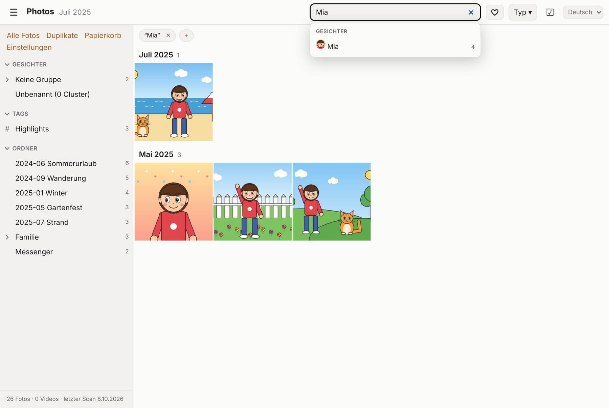
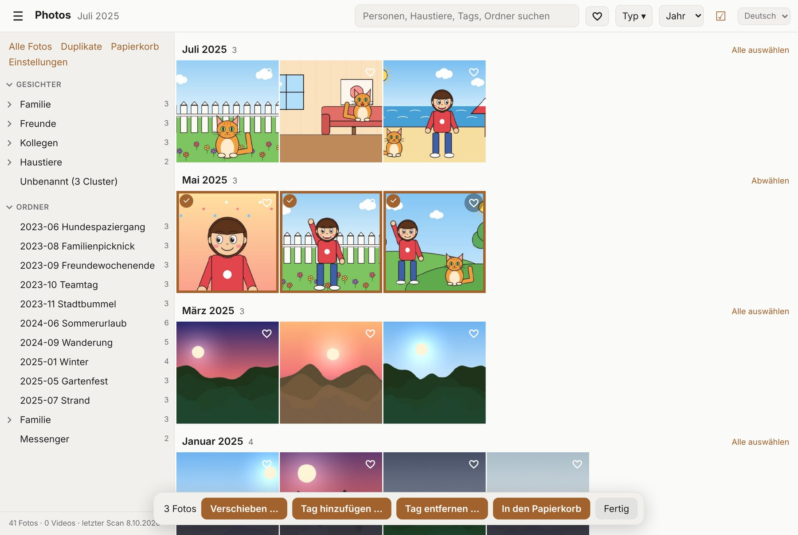
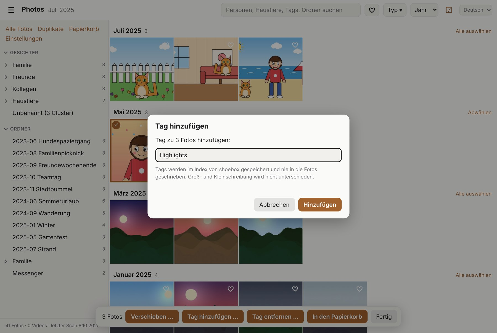
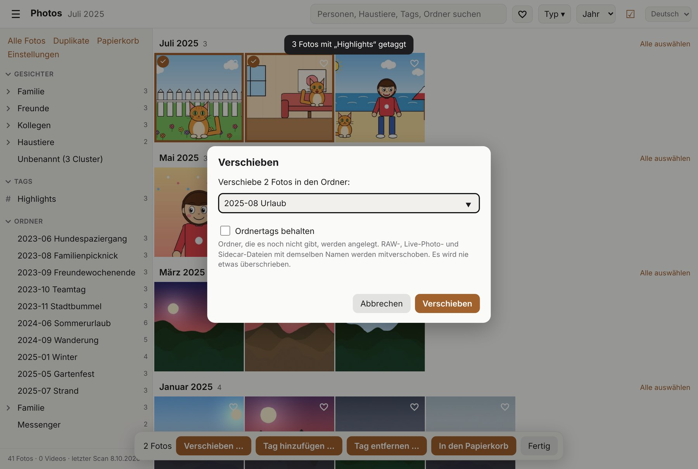
Einlesen, Duplikate und Papierkorb
Neue Fotos einlesen
shoebox importiert keine Fotos. Die Fotos im Finder oder Explorer aufs Laufwerk kopieren oder verschieben (dabei bleiben ihre Daten erhalten), am besten in einen Ordner namens JJJJ-MM Ereignis, und Scannen drücken. Findet der Scan neue Dateien, die das Laufwerk schon hatte, markiert die Zentrale sie mit schon auf dem Laufwerk und bietet Die neuen Kopien löschen an (in den Papierkorb oder endgültig). Das ältere Original bleibt und bekommt den Ordnernamen der gelöschten Kopie als Tag. In den Einstellungen wählst du, wie Ereignisordner in Vorschlägen heißen (zum Beispiel JJ.MM_Ereignis); vorhandene Ordner werden nicht umbenannt, und alle Formen werden erkannt.
Duplikate
Duplikate zeigt vier Arten: identisch, dasselbe Foto in anderer Größe, Original und bearbeitet sowie Ähnliche. Hake diese Kopie löschen bei dem an, was weg soll; die beste Datei bleibt, und von jedem Duplikat bleibt immer mindestens eine Datei. Tags und Aufnahmedatum einer entfernten Kopie gehen auf die übrige über. Bei mehr als einem Laufwerk zeigt der Reiter Über Laufwerke hinweg (in Alle Laufwerke und unter Laufwerke verwalten) Fotos, die auf mehreren Laufwerken liegen: ein Bild, eine Zeile pro Kopie mit Name des Datenträgers und Ordner. Hake die Kopien an, die weg sollen, oder wähle ein Laufwerk und Alle markieren, um jede Kopie darauf anzukreuzen; die letzte Kopie eines Fotos lässt sich nie ankreuzen. In den Papierkorb fragt vorher nach und legt jede Kopie in den Papierkorb ihres eigenen Laufwerks.
Schnellaktionen
Kopien im selben Ordner entfernen und Kopien geringerer Qualität entfernen räumen die eindeutigen Fälle in einem Zug auf.
Was du bei Duplikaten tun kannst
| Aktion | Bedeutung |
|---|---|
| Alle behalten | Nichts wird gelöscht. Diese Dateien gehören zusammen; sie erscheinen als Versionen bei jedem Foto. Schaltfläche oben rechts. |
| Verschiedene Fotos | Nichts wird gelöscht. Ähnliche Fotos sind getrennte Aufnahmen, keine Kopien. Schaltfläche oben rechts. |
| Diese Kopie löschen | Die Kopie kommt in den Papierkorb. Bei jeder Kopie anhaken, die weg soll; die beste Datei bleibt. |
| Dieses behalten | Alle anderen kommen in den Papierkorb. Nur bei ähnlichen Fotos: Foto öffnen, vergleichen, wählen, bestätigen. |
Alle behalten und Verschiedene Fotos sind interne Notizen: shoebox speichert sie in seiner eigenen Datenbank in .shoebox auf dem Laufwerk, nie in den Fotos. Diese Funde zeigt dir shoebox auf dem Bildschirm Duplikate nicht mehr an. Die Notizen bleiben erhalten, wenn du Fotos verschiebst oder umbenennst, und Kopien im selben Ordner entfernen und Kopien geringerer Qualität entfernen lassen diese Fotos in Ruhe.
Papierkorb
Nichts wird sofort gelöscht. Gelöschte Fotos warten in .shoebox/trash auf dem Laufwerk. Klicke Fotos an, um sie auszuwählen (Umschalt-Klick wählt einen Bereich), oder nimm Alle auswählen; die Leiste unten bietet dann Zurücklegen und Endgültig löschen. Endgültig löschen fragt vorher nach. Das Legen in den Papierkorb in der Zeitleiste und in der Fotoansicht ist standardmäßig aus: Schalte es einmal in den Einstellungen ein (In den Papierkorb legen erlauben). Das Löschen von Kopien bei den Duplikaten und mit Die neuen Kopien löschen funktioniert in jedem Fall und geht ebenfalls in den Papierkorb.
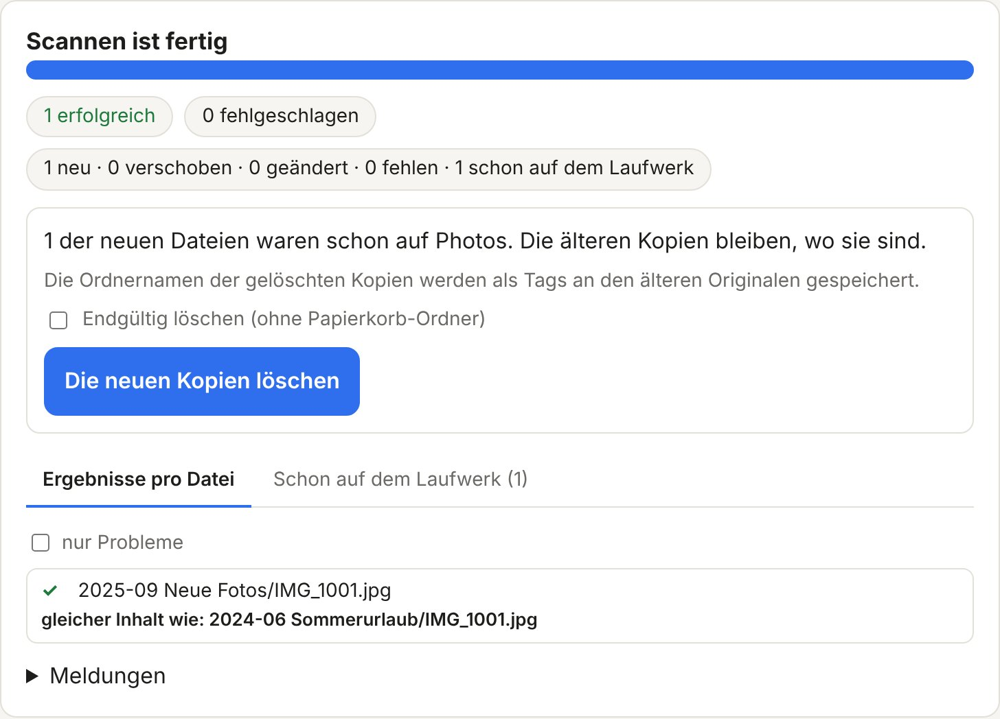
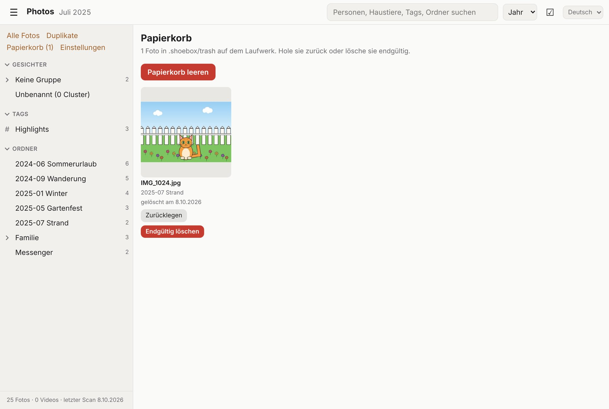
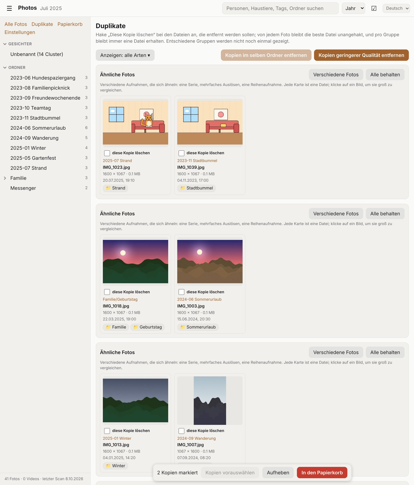
Personen und Haustiere
Optional: shoebox findet Gesichter, Katzen und Hunde; du vergibst die Namen.
Finden
Die Erweiterungen einmal installieren: in der Zentrale in Schritt 1 Erweiterungen ankreuzen, was du brauchst (Gesichter, und Haustiere für Katzen und Hunde), und Ausgewählte Erweiterungen installieren drücken. Sie liegen im Ordner recognizer neben dem shoebox-Programm: auf dem Laufwerk, wenn shoebox dort liegt, sonst auf deinem Computer für alle Laufwerke. Dann in der Zentrale Gesichter erkennen (und Haustiere erkennen) ausführen. In der Seitenleiste erscheint der Bereich Gesichter.
Benennen
Unter Unbenannt zeigt shoebox Karten mit ähnlichen Gesichtern. Einmal einen Namen eintippen, und die ganze Karte ist benannt; später Vorschläge bestätigen (✓) oder ablehnen (✗). Die nächsten beiden Seiten zeigen jeden Schritt, mit Gruppen und den Knöpfen für Fremde und Fehlfunde.
In der Ansicht
Das Infofeld nennt, wer auf dem Foto ist, und zeichnet um jedes Gesicht oder Tier einen Rahmen. Ein Klick auf einen Namen zeigt alle Fotos der Person; ein übersehenes Gesicht oder Tier kannst du mit einem Rahmen markieren.
Suchen
Namen funktionieren im Suchfeld wie Tags, ebenso Arten wie „alle Katzen“. Kombiniere eine Person mit einem Tag, einem Ordner oder einer weiteren Person.
Neue Fotos
Die Erkennung startet nach einem Scan noch nicht von selbst. In der Zentrale einfach erneut Gesichter erkennen anklicken; die Foto-App kann offen bleiben. Die Gesichtserkennung läuft nur auf den neuen Fotos.
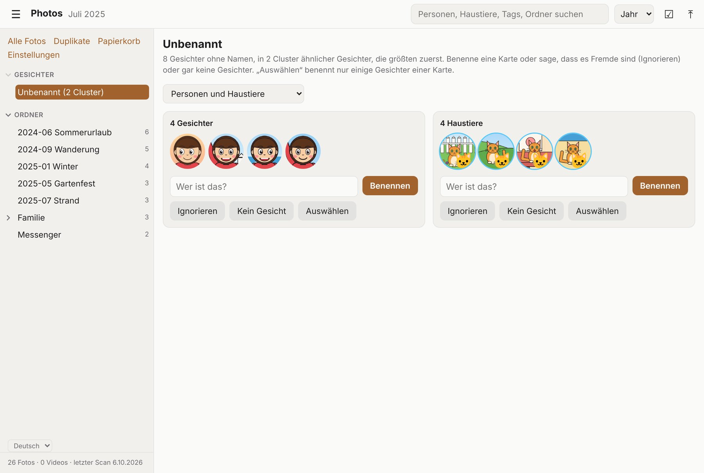
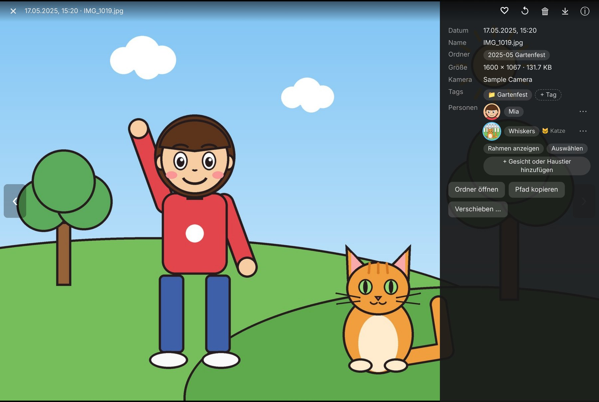
Die Beispielbilder sind gezeichnete Comics, keine echten Fotos.
Gesichter taggen, Schritt für Schritt
Nach dem Erkennen wartet jedes Gesicht auf einen Namen. Du musst nicht alle benennen.
-
Unbenannt öffnen
In der Seitenleiste Gesichter und dann Unbenannt öffnen. Jede Karte enthält Gesichter, die sich ähneln, die Karte mit den meisten Treffern zuerst. Katzen und Hunde haben eigene Karten; das Menü über den Karten wählt Personen, Haustiere oder beides.
-
Eine Karte benennen
Den Namen einmal eintippen und Benennen drücken: Die ganze Karte ist benannt. Beim Tippen erscheinen Personen, die es schon gibt (bei Tieren nur Katzen und Hunde, und umgekehrt); sonst + Neue Person wählen (bei Tieren steht dort + Neue Katze, + Neuer Hund oder + Neues Tier). Danach schlägt shoebox weitere Gesichter vor (Sieht aus wie Mia): mit ✓ bestätigen oder mit ✗ ablehnen.
-
Fremde und Fehlfunde
Ignorieren ist für Fremde und für Gesichter auf Postern, Bildschirmen und Bildern: Niemand muss sie benennen. Kein Gesicht (bei Haustieren Kein Haustier) ist für Fehlfunde, die gar kein Gesicht sind. Nichts wird gelöscht und kein Foto angefasst; shoebox merkt sich die Entscheidung nur in seiner eigenen Datenbank.
Manchmal hält die Erkennung eine Katze für einen Hund oder umgekehrt, und dann werden nur Namen der falschen Art angeboten. Das Tier oder die Tiere ankreuzen (Auswählen) und Ist eine Katze, kein Hund (oder Ist ein Hund, keine Katze) drücken, oder denselben Eintrag unter ⋯ am Tier im Infofeld eines Fotos wählen. Das Tier behält die bisherigen Entscheidungen und ist ab dann in der Namensliste, am Symbol und in der Suche eine Katze.
-
Nur einige Gesichter einer Karte
Auswählen lässt dich die Gesichter selbst ankreuzen. Die Knöpfe gelten dann nur für diese: 2 benennen, 2 ignorieren, 2 kein Gesicht. Praktisch, wenn eine Karte zwei Personen mischt.
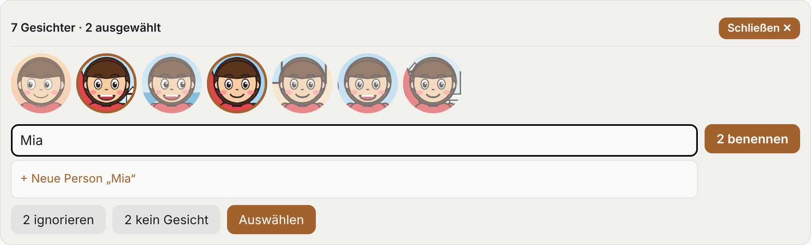
Mehrere Gesichter in einem Foto, und Gruppen
Gesichter in der Ansicht ankreuzen. Personen in Gruppen wie Familie, Freunde und Kollegen sortieren.
In einem Foto
Ein Foto und sein Infofeld (ⓘ) öffnen. Unter Personen hat jedes Gesicht sein Bild und einen Namen oder + Name. Auswählen macht die Liste zu einer Checkliste: mehrere Gesichter ankreuzen (Alle ohne Namen kreuzt jedes Gesicht an, das niemand benannt hat), dann Ignorieren oder Kein Gesicht für alle auf einmal. + Gesicht oder Haustier hinzufügen zeichnet einen Rahmen um ein übersehenes Gesicht oder Tier. Zuerst sagen, was es ist, Person, Katze oder Hund, dann benennen: Die Liste zeigt nur Namen dieser Art (keine Personen, wenn du eine Katze benennst), und + Neue Person, + Neue Katze oder + Neuer Hund legt eine neue an. Die Art eines selbst gezeichneten Tiers lässt sich später nicht ändern; den Rahmen löschen und neu zeichnen. Bei einem Tier, das die Erkennung gefunden hat, bietet ⋯ Ist eine Katze, kein Hund (oder umgekehrt) an, wenn sie es für das falsche gehalten hat.
Gruppen
Gesichter zeigt die Personen nach Gruppen. Neue Gruppe … legt eine an; Gruppen … benennt Gruppen um, ordnet sie und löscht sie; zum Ordnen ziehst du eine Zeile am Punktegriff links (oder fokussierst den Griff und drückst Alt+↑/↓). Eine Person ist höchstens in einer Gruppe, und das Löschen einer Gruppe löscht niemanden.
Personen in Gruppen legen
Bei einer Person auf ⋯ klicken und In Gruppe verschieben … wählen, oder die Person in der Seitenleiste auf eine Gruppe ziehen. Haustiere funktionieren genauso: Eine Gruppe Haustiere kann den Hund und die Katze enthalten.
Korrekturen
Im selben ⋯-Menü steht Zusammenführen mit … für zwei Karten derselben Person. Auf der Seite einer Person listet Gesichter prüfen Bestätigt, Vorgeschlagen, Vielleicht und Nicht sie, und ein versehentlich markiertes Gesicht kommt mit ↺ zurück. Kalibrierung (Gesichts- und Haustier-Prüfung) zeigt, was die Erkennung gefunden hat: kleine Gesichter, Werte und Fehlfunde.
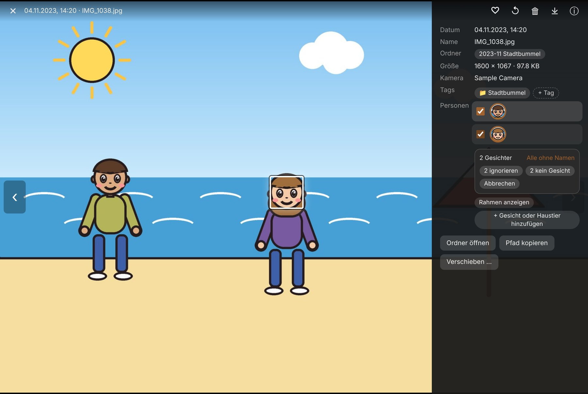
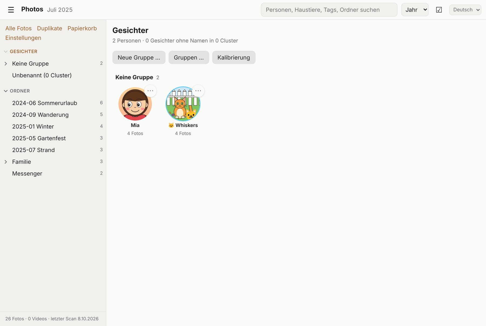
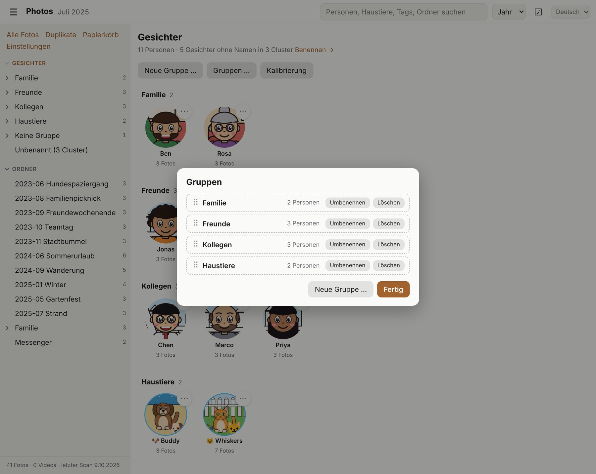
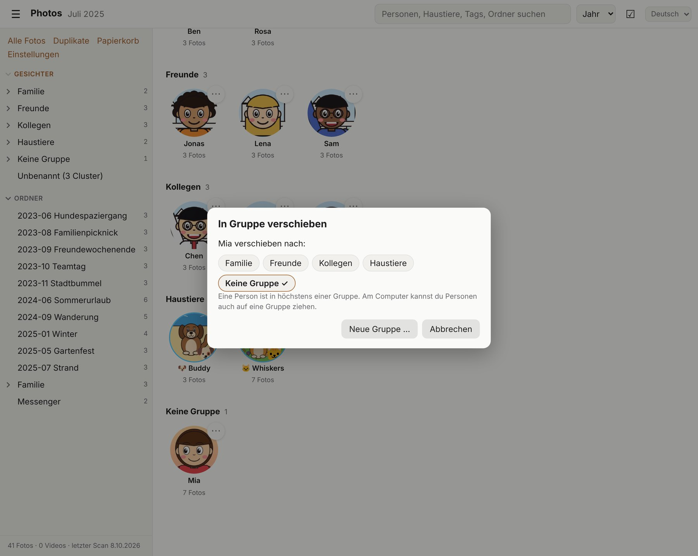
Orte und Karten
Optional: wo deine Fotos aufgenommen wurden, auf einer Karte. Aus, bis du es einschaltest.
Karten einschalten
Öffne die Einstellungen und setze den Haken bei Karten anzeigen (OpenStreetMap). Die Karten werden in deinem Browser aus OpenStreetMap gezeichnet; das ist die einzige Stelle, an der shoebox das Internet braucht: OpenStreetMap sieht, welche Kartenausschnitte du ansiehst, nie deine Fotos oder deren Namen. shoebox speichert keine Kartenbilder auf dem Laufwerk (dein Browser behält vielleicht welche in seinem eigenen Cache). Ohne Haken wird nie etwas aus dem Internet geladen. Die Einstellung gilt für alle Laufwerke: Du setzt sie einmal, und sie bleibt an, wenn du das Laufwerk wechselst. Dein Browser merkt sie sich; ein anderer Browser startet mit ausgeschalteten Karten.
In den Infos eines Fotos
Hat die Datei GPS-Daten, zeigt GPS-Daten im Infofeld die Position und, bei eingeschalteten Karten, eine kleine quadratische Karte mit einer Markierung, unten am Rand des Infofelds festgehalten. Ohne Internet steht dort stattdessen Offline. Ein Foto ohne GPS-Daten zeigt gar keine Karte, nur die Überschrift mit dem Knopf Ort festlegen….
Einem Foto einen Ort geben
Ort festlegen… (gleich rechts neben der Überschrift GPS-Daten) öffnet einen Dialog mit einer Karte und zwei Feldern, Breitengrad und Längengrad. Beides ist immer da und hängt zusammen: Klicke auf die Karte, um die Markierung zu setzen, oder tippe die Zahlen ein (Punkt oder Komma, Breitengrad −90 bis 90, Längengrad −180 bis 180, alles andere wird abgelehnt). Bei ausgeschalteten Karten funktionieren nur die Felder. Der Ort wird nur in shoebox gespeichert: Die Fotodatei bleibt unverändert, und er bleibt beim Foto, wenn du es verschiebst. Einen selbst festgelegten Ort kannst du wieder ändern oder entfernen; ein Ort, der in der Datei selbst steht, wird nie geändert.
Die Seite „Orte“
Bei eingeschalteten Karten erscheint Orte in der Seitenleiste unter den Ordnern. Sie öffnet eine Weltkarte mit einer Markierung für jedes Foto mit Ort; dicht beieinander liegende werden zu einer Zahl zusammengefasst und teilen sich beim Hineinzoomen auf. Klicke eine Markierung oder eine Gruppe an, dann teilt sich der Bildschirm: links die Karte, rechts die Fotos von dort, wie in der Zeitleiste. Ein Klick auf ein Foto öffnet es; der Pfeil oben in der Liste klappt sie ein.
Orte (Bereiche)
Ein Ort ist ein benannter Bereich, etwa „Zuhause“ oder „Insel XY“. Drücke Neuer Ort, klicke zwei gegenüberliegende Ecken auf der Karte an und gib einen Namen ein: Jedes Foto mit einem Ort innerhalb des Bereichs gehört dazu, jetzt und später. Die Orte stehen mit ihrer Fotozahl unter Orte in der Seitenleiste; ein Klick zeigt ihre Fotos. Du kannst auch nach dem Namen eines Orts suchen. Ist die Suche leer, öffnet die Auswahl den Ort auf der Karte, wie ein Klick in der Seitenleiste (ein Typ-Filter fällt dabei weg, wie bei jedem Klick in der Seitenleiste). Hat die Suche schon Chips (Ordner, Tag, Person, Haustier, Favoriten ♥), kommt der Ort als Chip 📍 dazu und du bleibst in der Zeitleiste: Alle Chips müssen passen, „Zuhause“ + „Anna“ zeigt also Annas Fotos von zu Hause. Ein zweiter Ort ersetzt den ersten. Das 🗺 am Chip zeigt den Ort auf der Karte, und ein auf der Karte gewählter Ort geht mit, wenn du einen weiteren Chip hinzufügst. In der Liste rechts kannst du einen Ort Umbenennen, den Bereich neu zeichnen oder ihn löschen; es verschwindet nur der Ort, nie ein Foto oder dessen Ort.
Orte und die von dir festgelegten Aufnahmeorte stehen zusammen mit deinen Tags und Personen in userdata.json neben dem Index auf dem Laufwerk.
Laufwerke, Backups und das iPad
Mehrere Laufwerke
shoebox mit mehr als einem Laufwerk starten, und jedes erscheint in der Seitenleiste. Alle Laufwerke zeigt eine gemeinsame Zeitleiste über alle. Sie ist zum Ansehen da: Favoriten zeigen ein ♥ (ausgegraut, nicht anklickbar), und die Infoleiste zeigt Tags, Favorit und Personen, ohne dass sich dort etwas ändern lässt (Rahmen anzeigen und das Zeigen auf eine Person, um ihr Gesicht zu sehen, funktionieren weiterhin). Die Leiste nennt das Laufwerk, auf dem das Foto liegt (den Namen des Datenträgers, wie in Laufwerke verwalten), und bietet Im Finder zeigen (unter Windows Im Explorer zeigen) und Pfad kopieren; In der Zeitleiste von <Laufwerk> öffnen wechselt zur eigenen Zeitleiste dieses Laufwerks, im Ordner des Fotos, um Tags, Personen oder Favoriten zu ändern. Laufwerke verwalten, neben Duplikate, Papierkorb und Einstellungen, öffnet eine Seite, die nicht vom angesehenen Laufwerk abhängt: deine Laufwerke als Karten und darunter zwei Reiter, Personen über Laufwerke hinweg und Duplikate über Laufwerke hinweg. Ein abgestecktes Laufwerk steht als offline da. Das Laufwerk, das du gerade ansiehst, ist in der Akzentfarbe ausgefüllt, ebenso die Seite darunter (Alle Fotos, Duplikate, Papierkorb, Einstellungen); so siehst du immer, welcher Papierkorb von welchem Laufwerk offen ist.
Original- und Backup-Laufwerke
Auf der Seite Laufwerke verwalten ist jedes Laufwerk eine Karte mit dem Namen der Festplatte und dem Ordner darauf (zum Beispiel Extreme SSD · /Photos). Mit dem Menü in der Karte sagst du, was das Laufwerk ist: Original-Laufwerk oder Backup-Laufwerk. shoebox schlägt ein Backup vor, wenn fast alles auf einem Laufwerk auch auf einem anderen ist, bis du dich entscheidest. Ein Backup hat einen blauen Rahmen, steht direkt hinter seinem Original und trägt Backup von … und Nicht in der gemeinsamen Zeitleiste. Es zeigt, wie viel vom Original auf dem Backup ist, und zwei Listen: Dateien, die noch nicht auf dem Backup sind, und Dateien nur auf dem Backup. Das Ordner-Symbol neben einer Datei zeigt sie im Finder (unter Windows im Explorer). Die Leiste unten in einer Karte sagt, wann das Laufwerk zuletzt gescannt wurde und wann zuletzt neue Dateien darauf angekommen sind (beim Backup: Letztes Backup); zeig auf ein Datum für die genaue Uhrzeit.
Backup-Prüfung
Erst das Original wählen, dann das Backup. shoebox vergleicht die beiden Indizes (kein Foto wird gelesen) und listet, was noch nicht auf dem Backup ist, was abweicht und was nur auf dem Backup liegt. Auch das Backup neu lesen findet Bitfäule.
iPad & andere Geräte
Im Terminal: shoebox serve /Volumes/MeinLaufwerk --lan. Es zeigt eine Adresse und eine PIN; die Adresse in Safari im selben WLAN öffnen und die PIN einmal eingeben. In der Ansicht wischen, zum Auswählen tippen.
Kommandozeile (optional)
shoebox scan <Ordner>- neue, verschobene und geänderte Dateien indexieren
shoebox verify <Ordner>- Dateien neu lesen und mit dem Index vergleichen
shoebox recognize <Ordner> [--pets]- Gesichter (und Haustiere) finden
shoebox backup <Original> <Backup>- ist das Backup vollständig?
shoebox serve <Ordner> [--lan] [--pin …]- die Foto-App öffnen
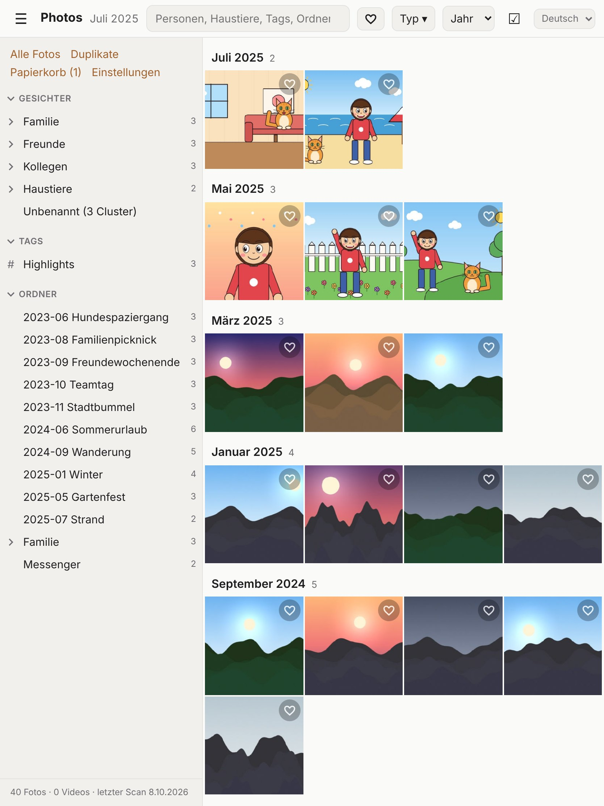
Deine Fotos sind sicher
Die Grundregel ist einfach: shoebox liest deine Originale und schreibt nie etwas hinein.
-
Nur lesen
Metadaten, Vorschaubilder, Tags und von dir festgelegte Aufnahmeorte liegen im Index auf dem Laufwerk (
.shoebox/library.db), nie in einem Foto. Aufnahme- und Erstellungsdatum ändern sich nie. -
Bewacht
Jeder Scan wird kontrolliert: Größe, Daten und ein vollständiger Hash davor und danach. Jeder Unterschied ist ein Fehler.
-
Nur auf deinen Befehl
Originale ändern sich nur durch deine Aktionen: verschieben, umbenennen, Papierkorb. Immer ein Umbenennen, nie ein Kopieren, und nur wenn die Datei noch zum Index passt. Das Einzige, was shoebox sonst entfernt, ist eine neue Kopie einer Datei, die das Laufwerk schon hatte, und nur, wenn du nach einem Scan den Knopf drückst.
-
Lokal
Keine Cloud, kein Konto. Standardmäßig kann sich nur dieser Computer verbinden; andere Geräte brauchen
--lanund eine PIN. Die einzige Ausnahme sind die optionalen Karten (Einstellungen, standardmäßig aus): Dein Browser lädt dann Kartenbilder von OpenStreetMap.
Wenn etwas komisch aussieht
Das Raster ist leer. Erst in der Zentrale Scannen, dann die Foto-App starten.
Neue Fotos fehlen. Noch einmal scannen. Das geht schnell: nur neue und geänderte Dateien werden gelesen.
Ein Video hat keine Vorschau. ffmpeg hinzufügen (siehe „Gut zu wissen“), dann Scannen ausführen oder die Foto-App neu starten.
Das iPad verbindet sich nicht. Selbes WLAN? Mit --lan gestartet? PIN aus dem Terminal eingeben. Nach einem Neustart von shoebox fragt es wieder nach der PIN.
Ein Laufwerk steht auf offline. Wieder anstecken; shoebox findet es beim Neuladen.
Eine Karte ist leer oder sagt Offline. Karten brauchen das Internet. Verbindung prüfen und das Foto noch einmal öffnen; alles andere funktioniert wie zuvor.